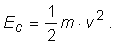
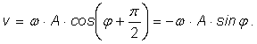

Lansează această reprezentare animată
a energiei potenţiale a unui oscilator armonic!
Lansează această reprezentare animată
a energiei potenţiale a unui oscilator armonic!
A.7. |
Energia oscilatorului armonic |
Când un oscilator este scos din poziţia sa de echilibru, acestuia i se transferă energie. Lăsat liber, forţele de revenire efectuează lucru mecanic şi modifică energia potenţială a oscilatorului şi, totodată, energia sa cinetică.
În cazul unui oscilator armonic, oscilaţiile au loc sub acţiunea unei forţe de tip elastic. Când elongaţia este x, energia potenţială (de tip elastic) este:
Dacă legea de mişcare a oscilatorului armonic este de forma:
| (1) |
expresia energiei potenţiale (de tip elastic) a oscilatorului devine (figura 1A7−1):
| (2) |
faza φ modificându−se în timp astfel:
Fig. 1A7−1. Modificarea în timp a energiei potenţiale (de tip elastic) a unui oscilator armonic.
Lansează această reprezentare animată
a energiei potenţiale a unui oscilator armonic!
Energia cinetică a oscilatorului este:

Dacă legea de mişcare a oscilatorului este cea dată de expresia (1), viteza oscilatorului este:

Aşadar, expresia energiei cinetice a oscilatorului devine:
Dar
astfel că expresia energiei cinetice a oscilatorului armonic este (figura 1A7−2):
| (3) |
Fig. 1A7−2. Modificarea în timp a energiei cinetice a unui oscilator armonic.
Lansează această reprezentare animată
a energiei cinetice a unui oscilator armonic!
Cum te aştepţi să se modifice în timp energia mecanică (totală) a unui oscilator armonic?
Oscilaţiile unui oscilator armonic au loc doar sub acţiunea unei forţe de tip elastic. Aceasta este o forţă conservativă (lucrul mecanic efectuat de aceasta este nul pe parcursul unei perioade de oscilaţie).
În consecinţă, energia mecanică (totală) a unui oscilator armonic nu ar trebui să se modifice în timp (oscilaţiile sunt neamortizate).
Într−adevăr, conform expresiilor (2) şi (3), energia mecanică a oscilatorului armonic este constantă în timp (figura 1A7−3):
Fig. 1A7−3. Energia totală a oscilatorului armonic este constantă în timp.
Lansează această reprezentare animată
a energiei totale a unui oscilator armonic!
Cât te aştepţi să fie energia mecanică a unui oscilator armonic cu masa 1 kg, care oscilează cu frecvenţa 1 Hz şi amplitudinea 1 m?
Dar dacă frecvenţa acestuia creşte de zece ori?
În cazul oscilatorilor reali, interacţiunile (inevitabile) cu mediul determină transfer de energie între oscilator şi mediul său. Energia mecanică a oscilatorului se "risipeşte" treptat în mediu, datorită acţiunii forţelor disipative (cum sunt cele de frecare) - oscilaţiile se amortizează (figura 1A7−4).
Fig. 1A7−4. Energia totală a unui oscilator real este transferată treptat mediului.
Când toată energia iniţială a oscilatorului va fi fost transferată mediului, oscilaţiile încetează.
Lansează această reprezentare animată
a energiei totale a unui oscilator amortizat!